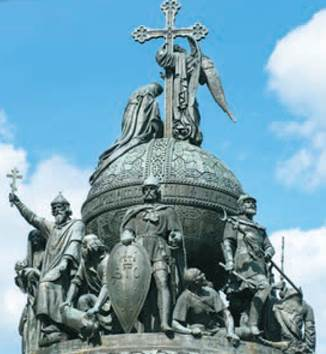
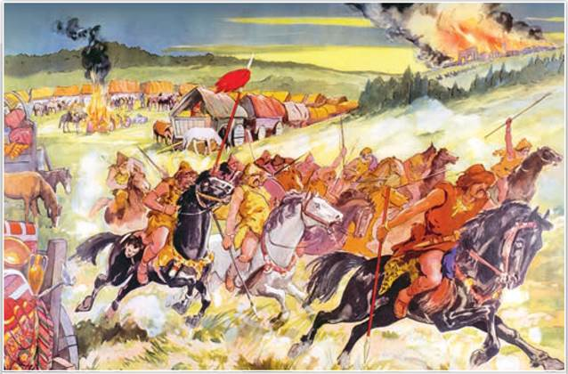
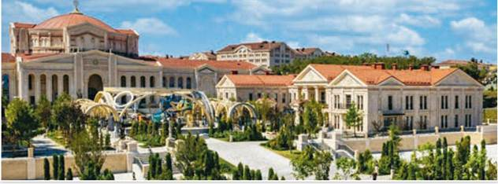
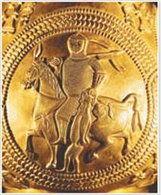
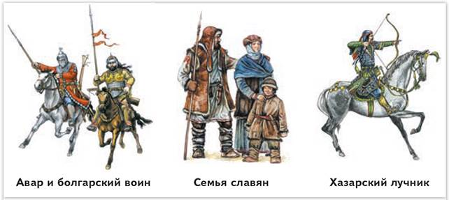
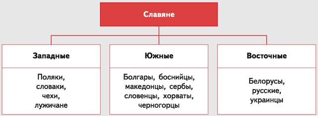
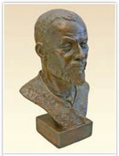
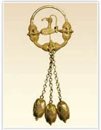
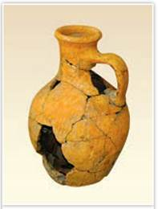

Памятник «Тысячелетие России». Фрагмент. Автор проекта М. Микешин. Великий Новгород
Монумент, открытый императором Александром II в 1862 г., во время Великой Отечественной войны (1941—1945) был варварски повреждён по приказу немецкого генерала и разобран для отправки в Германию. Сразу после изгнания врага памятник был восстановлен.
Дела давно минувших дней,
Преданья старины глубокой.
А. Пушкин. Руслан и Людмила
В «преданьях старины глубокой» перемешались реальные факты и легендарные события. Что же происходило на самом деле на раннем этапе отечественной истории? Это вопрос, ответ на который ищут учёные. Вы присоединитесь к ним. Вас ждёт захватывающее путешествие в эпоху создания и расцвета Руси. Вместе мы постараемся разгадать множество загадок «минувших дней».

Нашествие гуннов. Неизвестный художник
Гунны всю жизнь проводили в седле, поэтому в искусстве верховой езды им не было равных. Своим грозным видом и свирепыми криками они сеяли панику, обращая противника в бегство. Вторжение гуннов в Европу стало одним из главных событий Великого переселения народов.
• 1-е тыс. н. э. — Великое переселение народов
РОССИЯ
МИР
1. Древние жители нашей Родины. Из истории Древнего мира вы знаете, что значительная часть территории современной России была заселена в глубокой древности.
Наши древнейшие предки, как и всё человечество, прошли огромный путь — от использования каменных орудий труда к изготовлению железных, от охоты и собирательства к земледелию и скотоводству. У них появились религиозные верования и первобытное искусство.
Многие города-государства на территории современной России основали древние греки ещё в эпоху Античности. С VII в. до н. э. они осваивали Северное Причерноморье. На месте нынешней Керчи греки-переселенцы возвели Пантикапей, там, где сегодня находится Евпатория, — Керкитиниду. Заложенная ими Феодосия и в наши дни хранит своё историческое название. Процветал Херсонес Таврический (ныне Севастополь).

Музейно-храмовый комплекс «Новый Херсонес». 2024 г. Севастополь
Античный полис Херсонес Таврический на южном побережье современного Крыма в V в. до н. э. основали греки из Гераклеи Понтийской. На территории города Севастополя сохранились следы пребывания древних греков в Херсонесе: руины храмов, театра, крепостных стен. Позднее Херсонес первым из городов Северного Причерноморья встречал русских торговцев на пути в Византию. Здесь в 988 г. принял крещение князь Владимир. Без малого 200 лет древний Херсонес изучают археологи. В 2024 г. на священной земле Херсонеса был открыт историко-археологический парк «Новый Херсонес» с музеями христианства. Античности и Византии, Крыма и Новороссии, Детским художественно-эстетическим центром и школой «Корсунь». В ремесленном квартале музейного комплекса можно увидеть, как выглядел Херсонес в X в.
В VI в. до н. э. Северное Причерноморье заселили пришедшие из Передней Азии скифы. Столица позднескифского государства находилась на территории современного Крыма. Во II в. до н. э. скифов вытеснили сарматы. Одним из древнейших городов нашей страны является Дербент (сегодня территория Республики Дагестан), основанный на торговом пути, который в древние времена соединял Закавказье и Ближний Восток с Юго-Восточной Европой.
2. Народы Запада и Востока двинулись в путь. Великим переселением народов учёные называют особый период мировой истории, длившийся несколько веков в 1-м тыс. н. э. Массовое передвижение множества разноязычных племён и народов охватило Европу и Азию. Резкое похолодание климата, недостаток продовольствия, стремление завоевать земли, более пригодные для жизни, заставляли народы покидать обжитые территории.
Первую волну грандиозного переселения народов некоторые историки относят уже ко II в., когда пришли в движение германские племена готов. К III в. готы дошли до Северного Причерноморья. Большинство же учёных считают началом Великого переселения вторую половину IV в., когда в Европу ворвались азиатские полчища гуннов, потеснившие готов. С нашествием гуннов началась новая мощная волна переселений, охватившая весь европейский континент.

Всадник с пленником. Рельеф на кувшине из клада золотых предметов, найденном в Надь-Сент-Миклоше. Предположительно V—X вв.
Любопытные детали. В 1799 г. в городе Надь-Сент-Мйклош (сегодня территория Румынии) в проржавевшем сундуке был обнаружен клад золотых предметов времён Великого переселения народов. Кувшины, чаши, кубки, блюда общим весом около 10 кг пролежали в земле тысячу лет. На рельефе одного из драгоценных кувшинов древний мастер изобразил, как конный воин в доспехах волочит по земле пленника за волосы. Уже много лет учёные разных стран спорят о том, кому принадлежали уникальные сокровища. Возможно, это был вождь гуннов, древних болгар или венгров. А быть может, клад припрятал знатный авар. Одно несомненно: клад является бесценным памятником Великого переселения народов, своеобразным символом эпохи перемен, во многом изменившей ход мировой истории. Сегодня предметы из этого клада хранятся в Венском художественно-историческом музее.

К какой языковой семье принадлежат славяне?
В 476 г. под ударами варваров обрушилась Западная Римская империя. Это событие условно отделяет эпоху Древнего мира от Средневековья. Восточная Римская империя, которую историки называют Византией, устояла. Византии угрожали не только германцы и гунны, но и авары, хазары, тюрки, болгары-кочевники, славяне и многие другие народы.
3. Славяне, авары и тюрки. Тюрки, авары, болгары, хазары говорили на языках тюркской группы. Своих вождей они называли каганами. Славяне, как и германцы, принадлежали к индоевропейской языковой семье.
Историки спорят о том, где находилась прародина славян. Одни считают, что она располагалась в среднем течении реки Дунай. Другие полагают, что это была территория от бассейна реки Вислы до среднего Днепра. Есть и иные версии. Предки славян упоминаются в текстах античных авторов как венеды, склавины и анты. Историк готов Иордан (VI в.) писал, что венеды, склавины и анты — один народ, имевший схожие обычаи и язык.
Нашествие гуннов не стало для славян катастрофой. Но вторжение в Европу аваров в середине VI в. явилось для них настоящим бедствием. Авары, кочевавшие когда-то на просторах Центральной Азии, переселились в степи Поволжья и Северного Кавказа. В 560-е гг. авары уже совершали набеги на земли готов и франков, воевали с Византией, нападали на славян. На среднем Дунае они создали могущественное государство — Аварский каганат. Держава аваров распалась в конце VIII в. из-за внутренних несогласий, войн с Византией и франками.

Современные славянские народы
Какие три ветви славян сложились в ходе Великого переселения народов?
Уходя от натиска аваров, славяне широко разошлись по Европе, заняв земли от южных берегов Балтики, рек Эльбы, Вислы, Волхова до Дуная, Адриатического моря, Днестра, Карпатских гор, Днепра и Северо-Западного Причерноморья. В VII в. сформировались три ветви славян — южная, западная и восточная, которые существуют и поныне.
К востоку от Аварского каганата обитали тюрки. На просторах Центральной Азии в середине VI в. они создали огромную кочевую империю — Тюркский каганат. Многие народы входили в его состав, в том числе болгары и хазары. Но уже в конце VI в. из-за натиска китайцев и внутренних усобиц тюркская держава разделилась на две части — западную и восточную, сыграв важную роль в формировании тюркоязычных народов Евразии. В начале VII в. заявила о себе Хазария — мощное средневековое государство, с которым пришлось взаимодействовать многим народам, в том числе и восточным славянам.
4. Распад Великой Болгарии. В первой половине VII в. в степях Приазовья и Причерноморья образовалась Великая Болгария. Как и другие кочевые империи, она относительно быстро прекратила своё существование, распавшись под ударом хазар.
Часть болгар во главе с ханом Аспарухом откочевала на Балканский полуостров и создала там Первое Болгарское царство (по-другому — Дунайскую Болгарию). Болгары-кочевники растворились среди уже обитавших на Балканах южных славян-земледельцев, переняли их обычаи и язык и дали название государству. Так тюркоязычные болгары стали славянами. Началось формирование болгарского народа, который в IX в. принял крещение от Византии.
Другая часть болгар, или булгар (как часто называют их историки), ушла на север и обосновалась на средней Волге и Каме. Кочевые булгары перешли к оседлому образу жизни, занялись земледелием и пастбищно-стойловым скотоводством. Они активно взаимодействовали с обитавшими здесь прикамскими финно-уграми. В начале X в. сформировалось новое государство — Волжская Булгария. Первой её столицей был город Булгар на Волге (ныне — территория Республики Татарстан). В первой трети X в. официальной религией волжских булгар стал ислам.
Волжская Булгария находилась на пересечении важных сухопутных и речных торговых путей. Город Булгар был воротами, через которые шла торговля между странами Запада и Востока. Обширные торговые связи привели к расцвету ремесленного производства в Волжской Булгарии.
Подробнее. В разных землях были известны изделия булгарских мастеров: керамика, воинские доспехи, особой выделки кожи. Большой интерес исследователей вызывает ювелирное искусство волжских булгар. На территории Волжской Булгарии в погребениях археологи находят золотые и серебряные браслеты, височные подвески, ожерелья.

Волжский булгарин. Реконструкция М. Герасимова

Золотая височная подвеска. XI—XII вв. Прикамье

Булгарский керамический сосуд. IX—XIII вв.
При изготовлении поделок булгары использовали технологии ювелирного дела из восточных стран, а также развивали местные традиции работы с металлом. Археологические находки подтверждают высокий уровень развития ремесленного производства у булгар. Часть изделий волжские булгары продавали на внешнем рынке.
5. Финно-угры и балты. Северными и западными соседями волжских булгар были представители многочисленной финно-угорской группы языков. Большинство учёных считают, что прародина финно-угров находилась на территории Урала и Западной Сибири. Оттуда ещё в древности они начали своё расселение.
В основном финно-угры жили охотой и рыболовством. Они не отличались воинственностью и не участвовали в нашествиях кочевников на запад. Одни из них осваивали прибалтийские земли и стали предками современных карелов, эстонцев, саамов и финнов. Другие финно-угры (весь, норова, чудь, меря, мурома, мещёра, мордва и др.) расселились у Северной Двины, Ладоги, в междуречье Оки и Волги. Исключением из «мирных» финно-угорских племён эпохи Великого переселения народов стали венгры, в летописи называемые уграми. Сами себя они именовали мадьярами. Первые их отряды ворвались в Европу ещё в IV— VI вв. вместе с гуннами. В конце 1-го тыс. н. э. венгры обрели свою новую родину на Дунае.
С северо-запада, от берегов Балтийского моря вглубь Восточно-Европейской равнины, проникли балты — предки нынешних литовцев и латышей. Сюда же с юга и запада двигались восточные славяне.
ПОДВЕДЁМ ИТОГИ
В результате Великого переселения народов, длившегося несколько веков в 1-м тыс. н. э., карта мира значительно изменилась: одни государства и народы бесследно исчезли, другие появились. Активными участниками процесса Великого переселения народов были славяне.
Вопросы и задания
Работаем с хронологией
Расположите в хронологической последовательности события:
Работаем с источником
Прочитайте отрывок из труда византийского историка Прокопия Кесарийского «Война с готами» (VI в.), выполните задание и ответьте на вопрос.
Эти племена, склавины и анты, не управляются одним человеком, но издревле живут в народоправстве [то есть демократии], и поэтому у них счастье и несчастье в жизни считается делом общим. И во всём остальном у обоих этих варварских племён вся жизнь и законы одинаковы.
Они считают, что один только бог, творец молний, является владыкой над всем, и ему приносят в жертву быков и совершают другие священные обряды. Судьбы они не знают и вообще не признают, что она по отношению к людям имеет какую-либо силу, и когда им вот-вот грозит смерть, охваченным ли болезнью или на войне попавшим в опасное положение, то они дают обещания, если спасутся, тотчас же принести богу жертву за свою душу, и, избегнув смерти, они приносят в жертву то, что обещали, и думают, что спасение ими куплено ценой этой жертвы. Они почитают и реки, и нимф, и всяких других демонов, приносят жертвы всем им и при помощи этих жертв производят и гадания.
Живут они в жалких хижинах, на большом расстоянии друг от друга, и все они по большей части меняют места жительства.
Вступая в битву, большинство из них идут на врагов со щитами и дротиками в руках, панцирей же они никогда не надевают; иные не носят ни рубашек (хитонов), ни плащей, а одни только штаны, и в таком виде идут на сражение с врагами.
Работаем с понятиями
Какое понятие в ряду является лишним? Объясните почему.
ДОПОЛНИТЕЛЬНЫЕ МАТЕРИАЛЫ
«УЧИТЕЛЮ И УЧЕНИКУ».
Материалы к параграфу на портале «История.РФ».